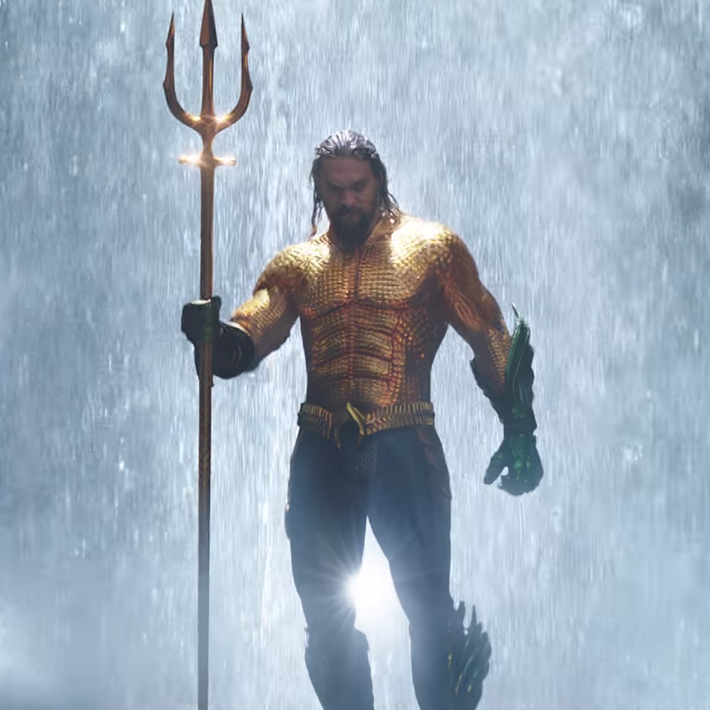

'Aquaman' Is Fun, But Could've Been So Much More BY KHAL, FRAZIER THARPE

It’s still kind of insane to think that comic book characters like Aquaman are only just getting their official solo film adaptations. It’s been damn near eighty years since the hero who’s major power is best described as “talking to fish” hit the magazine stands, and now Jason Momoa is ushering in a new era for Aquaman, under a DC regime that’s been more miss than hit. James Wan, who made his directorial debut with the first Saw film (which he also wrote), was seen as an interesting choice to direct this project. Sure, he has one Fast & Furious film under his belt, but he’s made his Hollywood bones with the likes of The Conjuring and Insidious franchises. How the hell would he handle this film, which DC needs to win big during this time of flux? About as well as you’d expect a DC film in 2018 not titled Wonder Woman to fair. Frazier and myself saw the film yesterday and then compared notes about DC’s latest, um, epic. Here are our thoughts. khal: First off, an observation. The screening I went to was at 10 in the morning, and while I know there was a lot of press in the building, I’m not sure if it was a mixture of people. When the film ended, there was a round of applause. I’m not sure WHY there was a round of applause, which makes me wonder what the mix of attendees in the audience was. People didn’t even clap during the Thor: Ragnarok screening I attended, and that film was actually lit! That said, this film is easily the second or third best DC film of the modern era...not sure how much of a compliment that is, but this is where we’re at. I won’t front like I didn’t enjoy some elements of the film, but as a whole? It felt like I was watching a film based on what worked in a number of superhero flicks over the last few years. Again, I’m not sure if that’s a compliment. How did you feel after walking out of the film? Frazier: Of the era demarcated from Zack Snyder’s Man of Steel onward, this is the best DC Comics movie, period. But! The bar for that measure of quality was on Atlantis sea level, so that literally means nothing! I’m throwing down the gauntlet, because far be it from me to typically tell rich suits I can do their job better than them but literally, however many millions the exec at the helm of this ship is making to steer it like Stevie Wonder, I’ll take that job for six figures. I care that much!
Seriously why can’t these people just make one straightforward film? It’s practically a social experiment at this point. Man of Steel is joyless. Batman v Superman is double joylessness with an extra helping of Zack Snyder speed-reading Frank Miller on whippets and Jesse Eisenberg’s idea for modern-day Lex Luthor being a Heath Ledger séance. Suicide Squad is a video game with a layman’s taste for pop art. Which brings us to the two best films in the group to date. I’ve gotta be honest—I stayed silent last year to be an ally because the moment was more important and ultimately delivered on that respect but...Wonder Woman is mid, G. That movie coasts on the sustainable energy that is Gal Gadot’s charm, compelling banter between herself and Chris Pine, and solid dialog. Patty excelled at scenes like Steve and Diana on the boat, but the action? More tedious slo-mo than Charlie’s Angels: Full Throttle. That bad guy/third act? Snooze. I digress—Aquaman is similarly a C+, albeit with different problems. It’s over-the-top in a way a film about an underwater empire directed by the guy who made Furious 7 inevitably has to be. But everything from the ridiculous vanity shots of steam blowing through Jason Momoa’s mane, to the dialog, to the jokes, to the set design and costumes, to Patrick Wilson’s bleached blond hair, made this reek of a Joel Schumacher production. Which is to say, too over-the-top. This movie could’ve been made in 2002, honestly.
khal: I actually had to laugh at how many times early on we’d get a guitar stab when Momoa hopped back on screen in that early submarine scene. Which, wow. That shit had me fooled; I really thought this movie was about to be litty based on how they set that up. I wasn’t expecting Black Manta to take that much of a backseat, including getting his ass handed to him roughly halfway into this overly-long film. When I saw the first full-length trailer for this film, I jokingly called it White Panther. It shares the “battle for the throne” vibe of Coogler’s Marvel epic, right down to the grating CGI. Seriously; I don’t know if Aquaman 2 is going to be an inevitable thing, but I hope it takes place on land, or in some air pockets, because I’m not sure I need to see Ivan Drago’s red hair swaying underwater, or people just floating through hallways.
Maybe Aquaman: Ragnarok is a better vibe for this film. It’s so goddamn colorful, with Wan and company really leaning into this being an unabashed superhero film about a guy who can drink you under the table and beat Michael Phelps in a race. The thing is, where Black Panther and Thor: Ragnarok still had some kind of emotional core, I’m not sure if there’s enough here to truly latch on to. Aquaman doesn’t really want the throne, no one in Atlantis really gives a shit about him, and he’s not enough of a hero to save one of the two black guys from dying early on. The biggest problem? There’s nothing that’s really learned, or earned, in this film. Black Panther saw T’Challa having to assume the role of king, lose it, then battle to get his kingdom back; this taught him that he has to dead the old ways and move towards a brighter, more collaborative future. Thor lost his entire fucking home, and you could feel the impact of that gut-wrenching loss. Aquaman? There’s no learning curve. At eight or nine he’s just talking to sharks? His first swimming lesson with Willem and he’s got those speed bursts like it’s nothing? He just learned that spinning scepter move on his own? I’m not sure how a film so long can also fast-track so much with no explanation.
Ultimately, this is a fun for what it is, and would’ve made sense to drop during the summer months. It has “huge summertime-waster” written all over it, but when held up against other films of its ilk? It pales in comparison. Frazier: This film has no emotional center. Aqua (I refuse to call a guy this jacked and badass “Arthur” lmao) legit hitting Black Manta with a “godspeed” when he could’ve easily lifted that shit off his dad and my dude legit begged for help hinted at more complex themes than we ultimately got. This film has no core, besides Aqua dad Jango Fett’s two-decade thirst for Nicole Kidman, who, God bless her, must really love her kids. Aqua, and the film itself, has no ties to the surface world besides his Dad, and a lack of human characters makes the fight for their survival seem that much more hollow. I actually appreciated how this movie is as over tortured, burden superheroes and their origin stories as we are that they don’t even bother explaining Aqua’s powers at length, how he came to terms with them, and how he decided to use them to save submarines or however the fuck he fills his times pre-Justice League, save for a perfunctory aquarium scene and one or two Willem flashbacks. What I liked most about this movie was its sense of adventure, a genre that’s generally underserved as a subset of superhero and just across film in general. The bulk of this film concerns a capital-q Quest, and when you have an actor as charismatic as Jason (and as game as Amber) on a Quest, then fun is a given. Once Aqua put on his best Club Monaco jet-setting fit, the film really let’s go and somehow the same journey takes him through the Sahara, Italy, on a boat fighting Power Rangers demons and finally, a Crash Bandicoot level. It’s ridiculous, but they sell it, and it’s undeniable if you don’t think hard.
.jpeg)
I really like Jason Momoa—but Hakuna Matata Aquaman is more shtick, than character, and as such, works better in an ensemble than dolo. Really, I just think making an over-the-top Aquaman that’s silly and goofy and has bad guys dressed like the Power Rangers robot is the easy way out. "It’s Aquaman," they’ll say. "He talks to fish, this could’ve never been The Dark Knight," they’ll argue. Sure. But there was a way to not go full Saturday morning cartoon and somehow still fall short of the Saturday morning cartoon that did it 10x better and more badass (my son lost a hand!). Casting against type with Jason was the first of few truly genius inspired choices. But hey, it’s better than Suicide Squad, right?